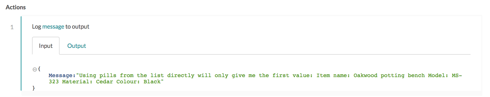
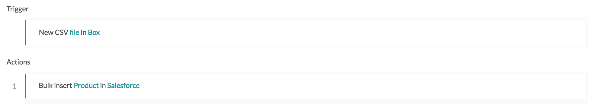
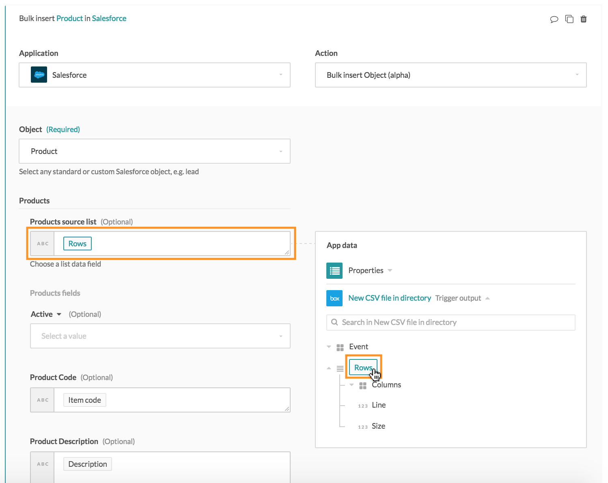
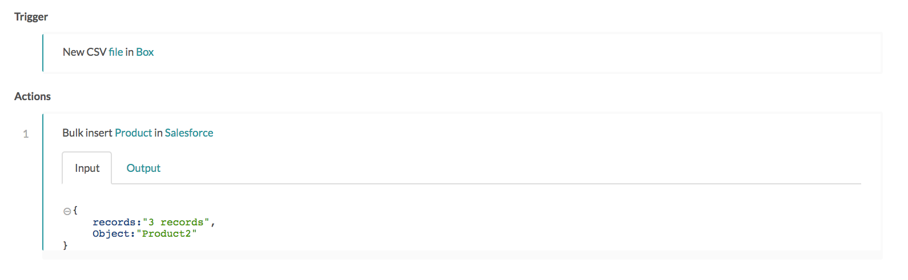
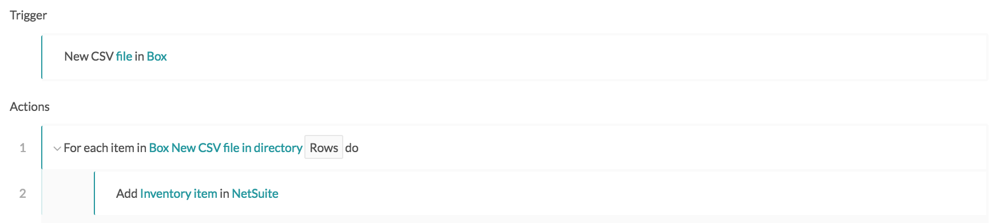
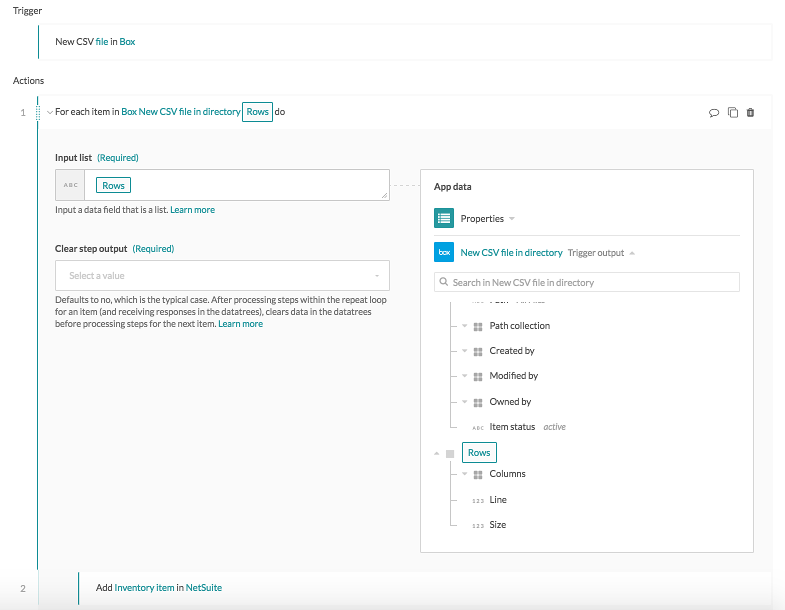
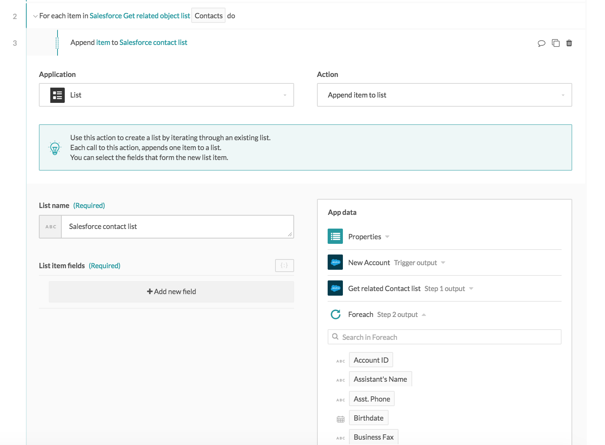
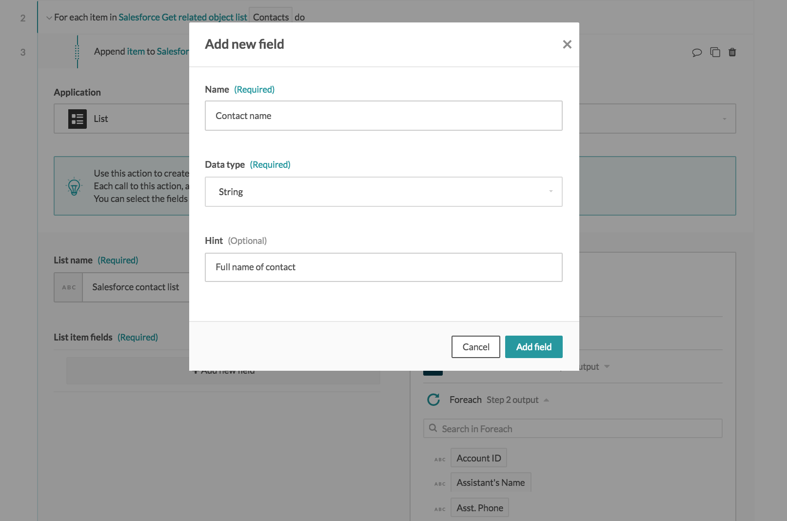
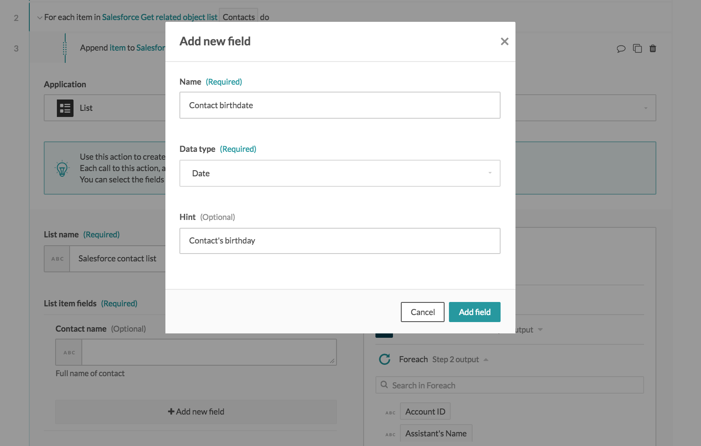
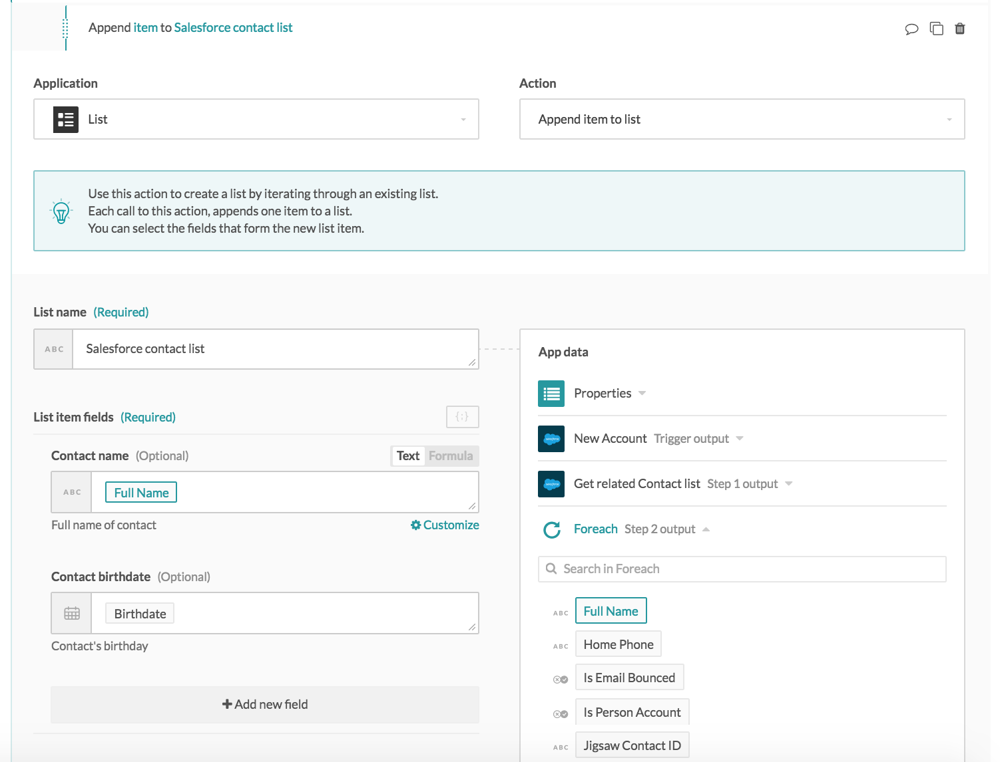

List management
App integrations often work with lists, e.g. syncing sales invoices involves moving of line items, syncing customer accounts involves moving of associated leads and contacts, etc.
Workato is able to read from and write to lists in various ways.
Example list setup
Various examples will be provided in this article on list management. The following sample CSV file will be used as the example list.
Manufacturer, Model, Category, Item Name, Item Code, Description, Unit Cost, Unit Price, Taxable, Tax, Custom Field 1, Custom Field 2, Custom Field 3
Sierra Gardening, MS-321, Gardening supplies, Pine wood potting bench, MS-321, Oakwood potting bench, 74.50, 119.99, Yes, 0.0875, Pine, White, 30 inches
Sierra Gardening, MS-322, Gardening supplies, Cherry wood potting bench, MS-322, Oakwood potting bench, 74.50, 119.99, Yes, 0.0875, Cherry, Natural, 30 inches
Sierra Gardening, MS-323, Gardening supplies, Cedar wood potting bench, MS-323, Oakwood potting bench, 74.50, 119.99, Yes, 0.0875, Cedar, Black, 30 inches
In most of the examples, the Box trigger New CSV file will be used to read this CSV file from a Box folder and parse it to Workato as a list of three CSV lines. Create a CSV file with the above CSV sample and upload into a specific Box folder for the New CSV file trigger to pick up.
If the above CSV file is the only CSV file in the selected Box folder in the trigger configuration, the fields list will be populated automatically with the column names. The column names has to correspond exactly with the header line in the CSV file in order for the CSV data to be mapped accurately to their columns.

Defining the expected columns in the CSV files that the recipe will pick up Example recipe
The columns defined in the Box new CSV file trigger shows up as a list of usable variables in the output datatree. These variables can be used to map into subsequent recipe steps.

Row of CSV columns in the trigger output datatree
Notice the row icon in the datatree. This identifies lists in the datatree.

List icon within datatree
These datapills can be used to map into Workato actions' input fields. There are three ways to map datapills from lists:
- directly into an action without list processing
- into an action with a list input (action handles list processing implicitly)
- into an action with a Repeat step (action does not handle list processing, list processing needs to be done explicitly at the recipe logic level)
Using datapills from lists
Using datapills directly in an action without list processing
When using pills directly from a list, only the values of the first list item will be retrieved. In the following recipe, pills from the list are used directly in the Log message action.
Recipe using list pills directly in Log message action
 Example recipe
Example recipe

Field mappings for Log message action
In the job details page, the trigger output displays all three lines within the CSV file.

Trigger output details displaying lines within the CSV file
As the Log message action uses only datapills directly from the list, without handling the list in any way, only the first line's data is retrieved.

Log message input displaying only the first line of data
Using datapills in an action with a list input (action handles list processing implicitly)
Some actions will accept a list as input e.g. Salesforce bulk insert and bulk update actions, create journal entry actions for accounting apps, create sales order actions for ERP apps.
The following is an example scenario that imports new products from a Box CSV file into Salesforce via the Bulk insert action.

Example recipe using list input Example recipe
Actions that take lists as inputs will have a input field called Source list, which will only take in list pills. When these list input fields are selected, the datatree changes to offer only list pills. The Rows list object pill is mapped into the Salesforce product source list input field.

Rows list object is mapped into the Salesforce products input source list
For the list object passed into the input source list, the list will be transferred from the source app to the target app, with the values being trasnferred based on the fields mapped in the recipe. The three inventory items will be moved from Box into Salesforce as products.

Mapping of list datapills to list input
The following shows the CSV file content.
Trigger output details displaying lines within the CSV file
The action output in the job history shows that three products have been created accordingly in Salesforce.

Salesforce bulk insert via list input
Using datapills in an action with a Repeat step (action does not handle list processing, list processing needs to be done explicitly at the recipe logic level)
In this example scenario, let's import a list of new inventory items (recorded within a CSV file just uploaded into Box) into a NetSuite instance. There is a list to read from with the Box connector's New CSV file trigger, but no list processing capabilities in the NetSuite connector's Add inventory item action.
In order to move through the list and create three NetSuite inventory items, the Repeat step should be used to iterate through the list, and carry out the same action for each iteration.
 Example recipe
To iterate through the Rows list, pass the Rows list object as input for the repeat step. The recipe will therefore iterate through the list thrice to repeat the "Add inventory item" action thrice, with different values from different CSV lines each time.

Provide the list object as input for repeat step
When using the Repeat step, the important thing to note is to retrieve datapills from the For each datatree.

Mapping datapills from the Foreach datatree
This ensures that, when the list is being iterated through, the first Add inventory item step uses the first line:
Sierra Gardening, MS-321, Gardening supplies, Pine wood potting bench, MS-321, Oakwood potting bench, 74.50, 119.99, Yes, 0.0875, Pine, White, 30 inches
The second Add inventory item step uses the second line:
Sierra Gardening, MS-322, Gardening supplies, Cherry wood potting bench, MS-322, Oakwood potting bench, 74.50, 119.99, Yes, 0.0875, Cherry, Natural, 30 inches
And the third Add inventory item step uses the third line:
Sierra Gardening, MS-323, Gardening supplies, Cedar wood potting bench, MS-323, Oakwood potting bench, 74.50, 119.99, Yes, 0.0875, Cedar, Black, 30 inches
Common mistake when using Repeat step
As discussed here, using pills directly from the list object in the datatree without list handling will result in the first list item being used. Hence, if datapills from the list object (instead of datapills from the Repeat step) are used inside the Repeat step, the recipe still iterates through the 3 CSV lines, but instead of using values from each line with every iteration, only values from the first line will be used for all 3 iterations, resulting in duplication.

Example of a recipe with wrong direct mapping from list instead of from the Repeat step (Example recipe)
List connector (Accumulator)
The list connector is a Workato utility built for users to create custom lists and store data in the list for the duration of a job, to be used in the same job. It is usually used for users to prepare a list to write to an action with a list input.
Using the accumulator action to create a custom list
Defining the list fields
A custom list has to be created before data can be accumulated and stored within it. To create the list, select the List connector and its default action Append item to list.

Accumulator with no fields configured
Define the fields in the custom list by configuring field name, type and hint.

Adding a string field to the accumulator list

Adding a date field to the accumulator list
After configuring the fields in the custom list, ensure that the list is within a Repeat step and that the datapills are mapped from the Repeat step's output datatree. This ensures that the iterated list items' values are mapped into the custom list accordingly, and that values are not being duplicated within the list because the wrong pills from the main datatree (as opposed to the Repeat step's datatree) were mapped as shown above.

Configured and mapped accumulator
Fields can be added or edited within custom lists anytime.
Fields can be added or edited in custom lists
The custom list can also be edited via its JSON representation.

Editing the custom list's JSON representation
Example recipes that use accumulator, list input and Repeat step
Let's take the scenario whereby closed won Salesforce opportunities with a list of opportunity products need to be moved into NetSuite as sales orders with a similar list of line items.
The NetSuite connector's Create sales order action takes in a list of line items that reference the inventory items' internal NetSuite ID. This means that users similarly need to have a list of NetSuite inventory item IDs to create the NetSuite sales order in a single action. However, from Salesforce, only Salesforce opportunity products' IDs are available. In order to obtain the NetSuite inventory items' internal IDs, users would have to search for the correct NetSuite inventory item by its Salesforce opportunity product name, and then pass the NetSuite internal ID of the found NetSuite inventory item into the Create sales order action.
There are two ways of building this recipe: 1) Using accumulator + list input. Iteratively build a custom list of NetSuite inventory items from the Saleforce opportunity product list, then create the complete NetSuite sales order with lines in a single action
Iterate through the Salesforce list of opportunity products via a Repeat step to find corresponding NetSuite inventory items, and accumulate that in a custom list. Subsequently, create a complete NetSuite sales order with a list of line items in a single action, by passing in the custom list built with accumulator.

Salesforce-Netsuite recipe using Repeat step Example recipe
2) Using Repeat step. Create a NetSuite sales order, then iteratively move lines from Salesforce opportunity to NetSuite sales order via a Repeat step.
First, create a NetSuite sales order. Then, in a Repeat step, search for Netsuite inventory item by Salesforce opportunity product name (or any other identifying field). Pass the internal ID of the NetSuite inventory item found into the Update sales order action in order to append a new line to the sales order.

Salesforce-Netsuite recipe using Repeat step Example recipe